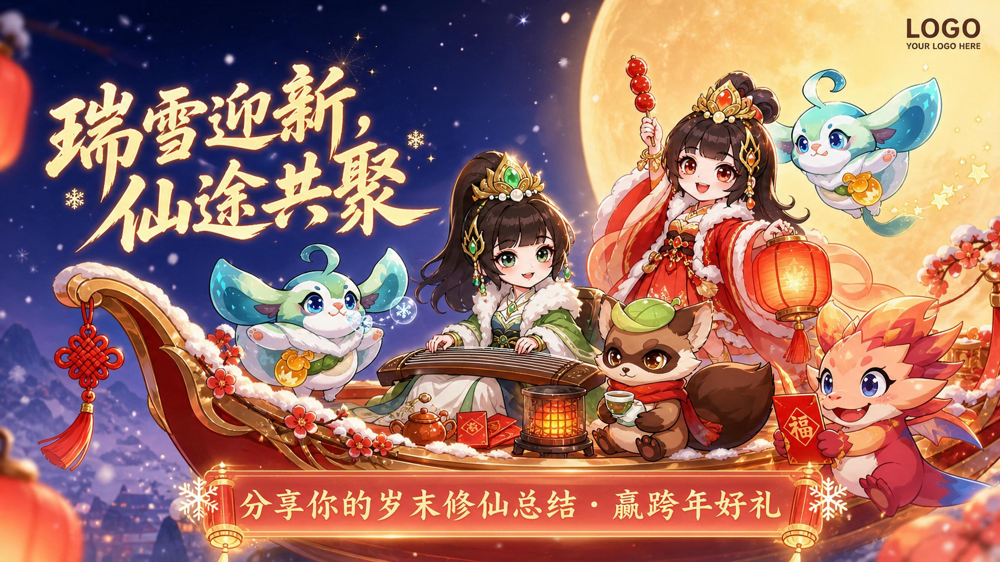
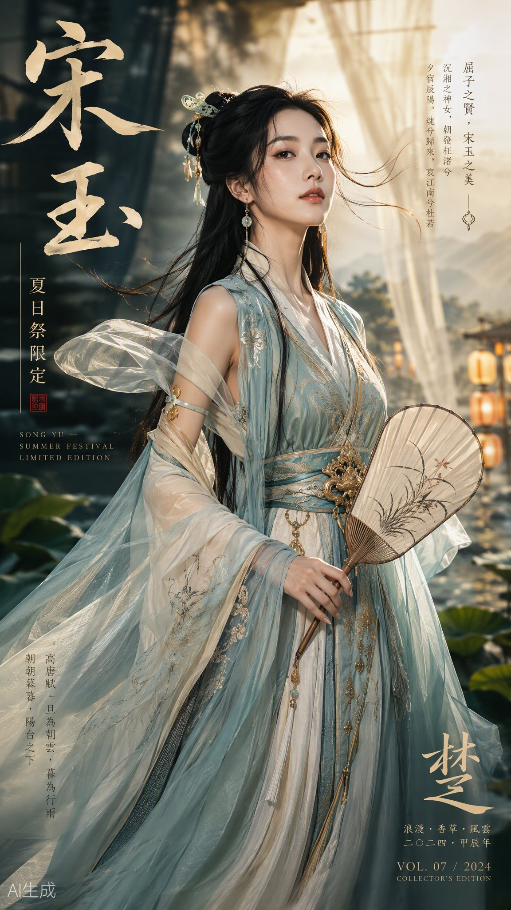
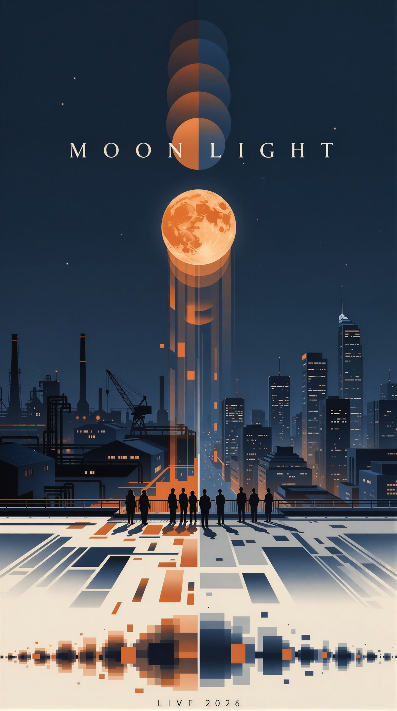
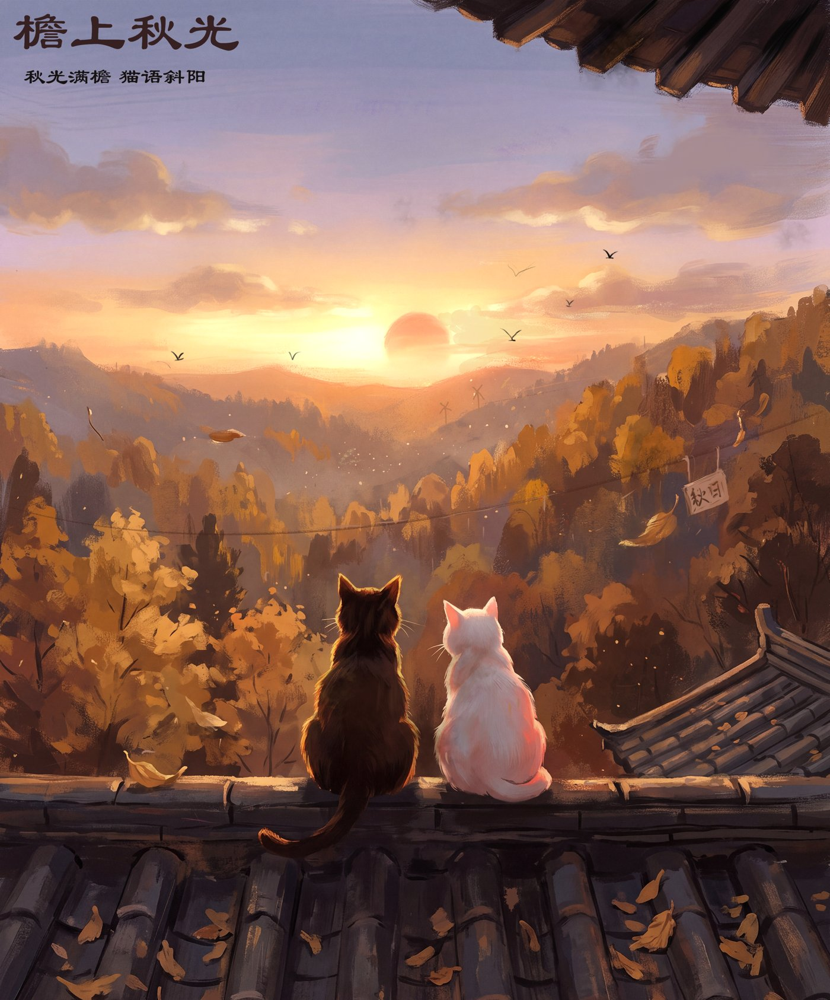

四张国风视觉，覆盖春节 / 夏日祭 / 中秋 / 秋景四个节令场景。从完整活动 KV（含 Logo 与 slogan）到单张节日海报，展示国风美学在商业活动与艺术表达之间的切换能力——这正是游戏视觉岗位最核心的活动 KV 需求。
横版春节活动 KV，含品牌 Logo、活动 slogan「分享你的岁岁仙途故事」、Q 版国风角色与龙 / 灯笼等节庆元素。是四张里商业完整度最高的一张——可直接作为游戏春节活动的主视觉参考。

另外三张围绕「节日 / 节令」展开：夏日祭的古装少女、中秋的月夜塔景、秋日的屋顶双猫。每张都是独立的国风场景，合在一起构成一条有节奏的视觉线。



| 作品 | 用途 | 分辨率 | 构图 / 风格 |
|---|---|---|---|
| 瑞雪迎新 · 仙途共聚 | 春节活动主视觉 KV | 2672×1504 | 横版 / Q 版国风 + 节庆元素 |
| 宋玉夏日祭 | 夏日祭限定海报 | 1152×2048 | 竖版 / 古装写实国风 |
| MOONLIGHT 中秋 | 中秋节日海报 | 2400×4288（展示版 1200×2144） | 竖版 / 月夜城市写意 |
| 檐上秋光 | 秋景主题插画 | 3584×5265（裁切展示版 1400×1686） | 竖版 / 国风秋景插画 |
横版活动 KV（瑞雪迎新）需要横向铺开场景、把 Logo 与 slogan 放在视觉动线的落点；竖版海报（宋玉 / MOONLIGHT）则靠纵向纵深引导视线。同一套国风语言，构图逻辑完全不同。
瑞雪迎新选龙、灯笼、Q 版角色——都是高识别度的春节符号；中秋则只用月、塔、城市剪影，走克制写意路线。元素多少由场景调性决定，而不是堆砌国风符号。
活动 KV 用 Q 版角色降低距离感、提升传播性；节日海报用写实国风提升质感。能根据用途在两种风格间切换，是游戏视觉岗位的核心能力。
檐上秋光原图底部含商业广告样机与品牌标识。出于作品集署名规范，裁掉底部商业区，只保留纯国风秋景插画主体——保留画面价值、规避品牌争议。